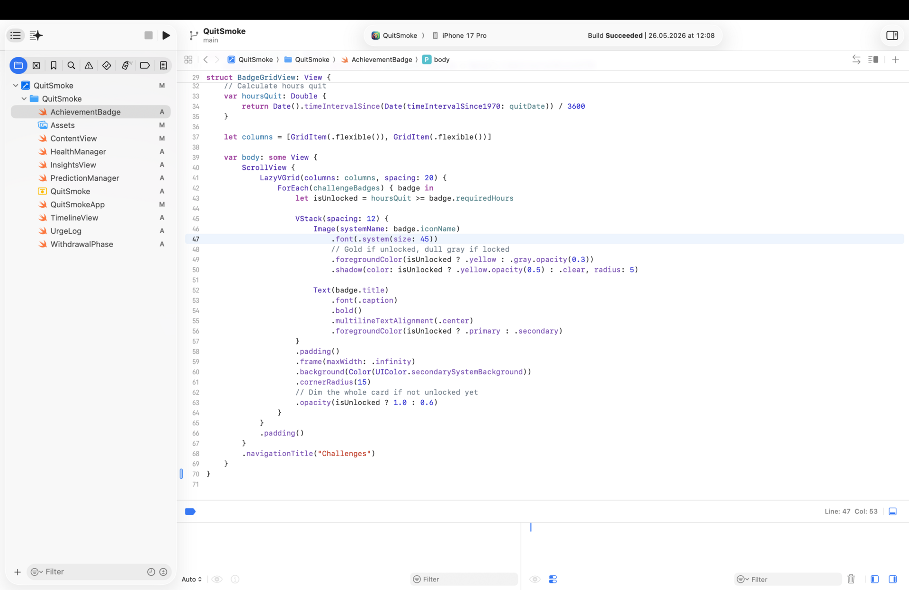
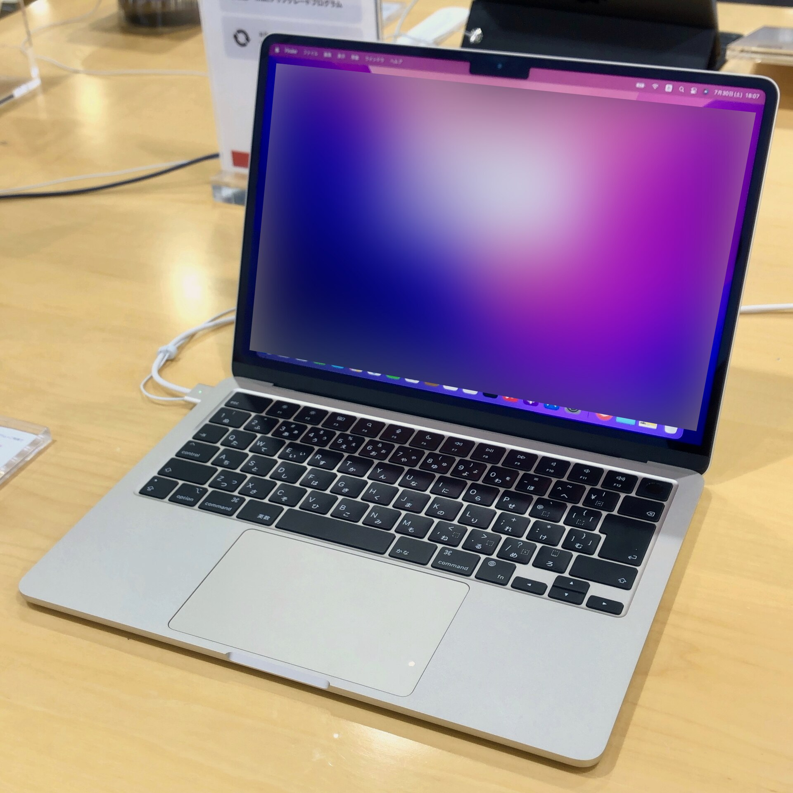

机の上の大きさ
上から見た大きさを同じ縮尺で並べた。miniはノートの4分の1くらいしか場所を取らない。ただしminiの場合、この横にモニターとキーボードが要る。
- Mac mini：12.7×12.7cm、高さ5.0cm
- MacBook Air 13：30.41×21.5cm、厚さ1.13cm
- MacBook Pro 14：31.26×22.12cm、厚さ1.55cm
AirとProはほぼ同じ大きさで、違いは厚さと重さ。カバンに入れるなら、差は320gだけ。

先に結論。家の机で作るならMac mini（M6、24GB／512GB、221,800円）。外でも作るならMacBook Air（M5）。MacBook Proは、外で長いビルドを回す人向け。
まず前提から。iOSアプリはXcodeでしか作れないので、Xcodeがまともに動くことが最低条件になる。2026年11月時点の最新はXcode 27.2。
要するに、今売っているApple siliconのMacならどれでもXcode自体は動く。差が出るのはメモリ、ビルドを回し続けたときの熱、画面の広さ、持ち運べるかどうか。


一番安い構成どうしで並べた。MacBook Proは14インチのM6モデル（11月6日発売）。
| 項目 | Mac mini（M6） | Air 13（M5） | Pro 14（M6） |
|---|---|---|---|
| 最安構成 | 149,800円（16GB／256GB） | 224,800円（16GB／512GB） | 339,800円（16GB／1TB） |
| CPU／GPU | 12／12コア | 10／8コア（10コアGPUは上位） | 12／12コア |
| メモリ | 16〜32GB | 16〜32GB | 16〜32GB |
| メモリ帯域 | 153〜170GB/s | 153GB/s | 153〜170GB/s |
| 画面 | なし（外部3台まで） | 13.6型 60Hz（外部2台まで） | 14.2型 120Hz XDR（外部2台まで） |
| 重さ | 0.67kg | 1.23kg | 1.55kg |
| バッテリー | なし | 最大18時間 | 最大24時間 |
| 端子 | TB4×3、USB-C×2、HDMI、2.5GbE | TB4×2、MagSafe | TB4×3、HDMI、SD、MagSafe |
MacBook Neo（119,800円）も候補に入れかけたが、メモリが8GB固定なので外した。Xcodeとシミュレータを並べるには足りないと思う。
最安構成どうしだと条件がバラバラなので、メモリとSSDをそろえて比べ直した。

スペック表だとわかりにくいので、iOS開発の場面ごとに比べた。◎が一番いい。

Mac miniの背面。モニターは後ろに、iPhoneは前のUSB-Cに挿せる
| 場面 | mini | Air | Pro |
|---|---|---|---|
| ビルドの速さ | ◎ 12コア | ○ 10コア | ◎ 12コア |
| 長いビルド | ◎ ファンあり | △ ファンなし。熱で落ちやすい | ◎ ファンあり |
| Xcode＋シミュレータの画面 | ◎ 外部モニター3台まで | △ 13.6型は狭い | ○ 14.2型＋外部2台 |
| 実機テスト | ○ 前面USB-Cが便利 | ○ 無線デバッグで十分 | ○ 同左 |
| 持ち運び | × | ◎ 1.23kg | ○ 1.55kg |
| 値段（16GB／512GB以上） | ◎ 185,800円 | ○ 224,800円 | △ 339,800円 |
上から見た大きさを同じ縮尺で並べた。miniはノートの4分の1くらいしか場所を取らない。ただしminiの場合、この横にモニターとキーボードが要る。
AirとProはほぼ同じ大きさで、違いは厚さと重さ。カバンに入れるなら、差は320gだけ。
どこで作る？ ├─ 外でも作る │ ├─ 長いビルドをよく回す → Pro 14 │ └─ そこまでじゃない → Air 13 └─ ほぼ家の机 ├─ モニターがある → mini 24GB └─ モニターもない → mini＋モニター
動くことは動くと思う。A18 ProもApple siliconなので。ただメモリが8GB固定で増やせない。シミュレータを立ち上げた時点できつくなるはずなので、メインの開発機にはしない方がいい。
普段のビルドなら困らない。気になるのは、クリーンビルドやテストを何度も回したとき。熱がこもると速度を落として冷やすので、Proやminiより時間がかかる。ここは割り切りだと思う。
iOS開発だけなら要らないと思う。299,800円からで、M6との差は150,000円。動画編集や大きいローカルLLMも一緒にやるなら考える、くらい。
モニター、キーボード、マウスかトラックパッドが要る。持っていなければその分が上乗せになるので、Airとの差39,000円はすぐ埋まる。手持ちがあるかどうかで答えが変わる部分。
同じ。どれもUSB-Cでつなげるし、Wi‑Fi経由のデバッグもできる。miniは前面にUSB-Cがあるので、iPhoneを挿しっぱなしにしやすいのは少しうれしい。

スペック表を眺めていたときは悩んだが、場面ごとに並べたら腹落ちした。同じ値段なら、持ち歩かない画面に払うよりメモリに払った方がいい、ということにしておく。